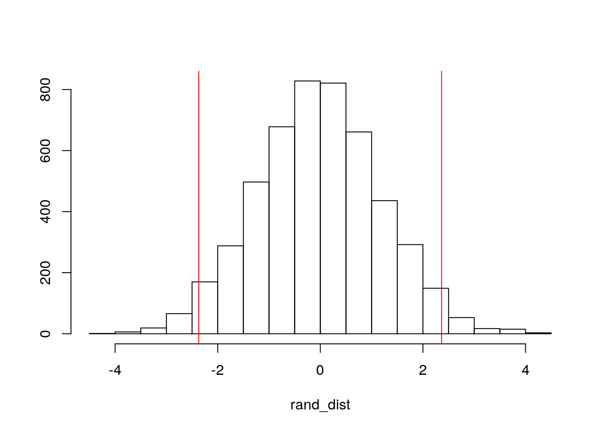
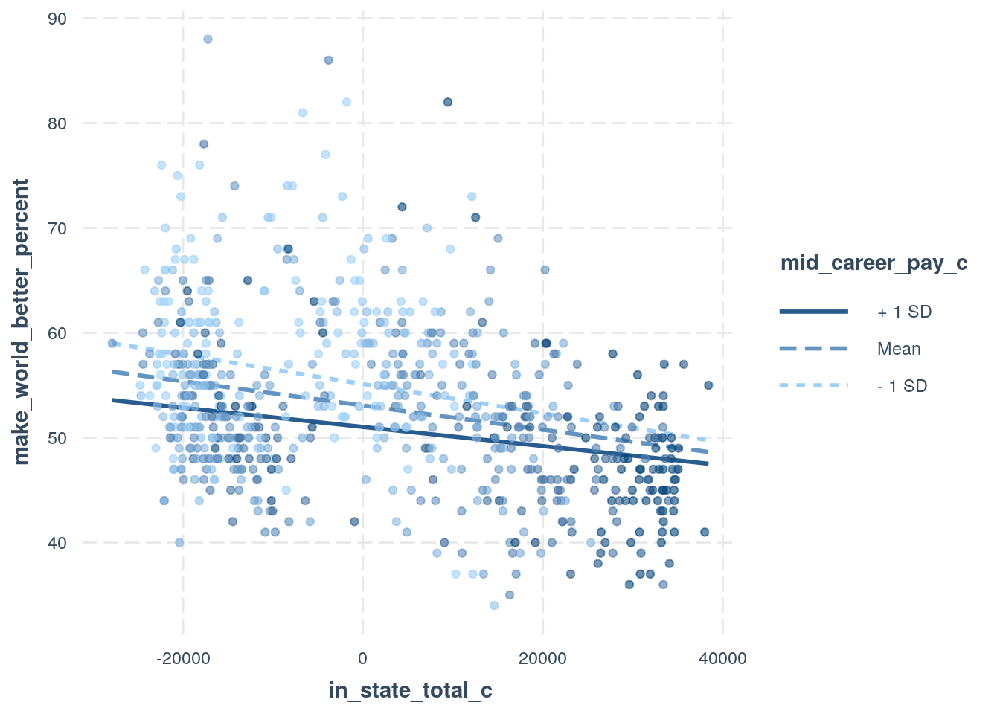
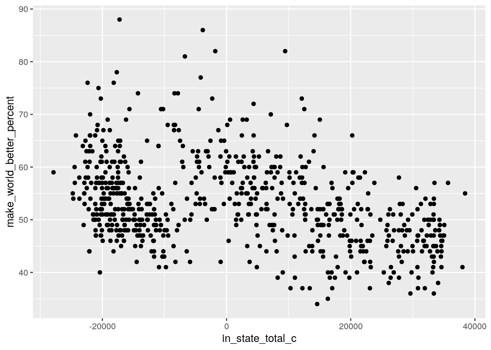
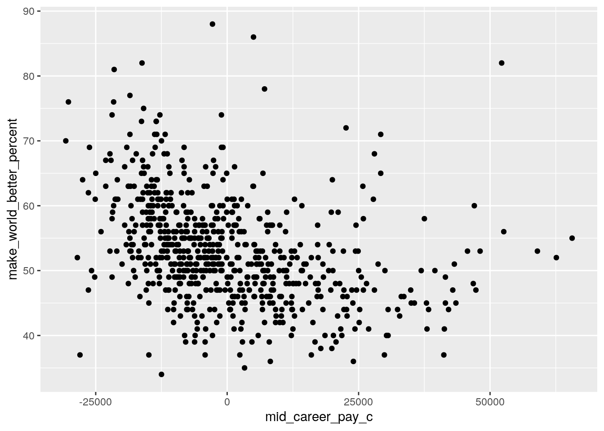
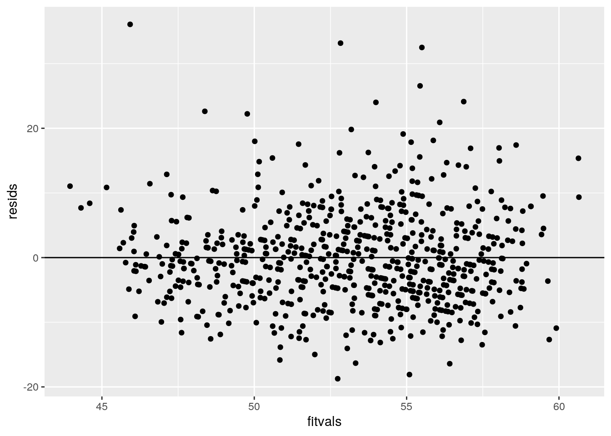
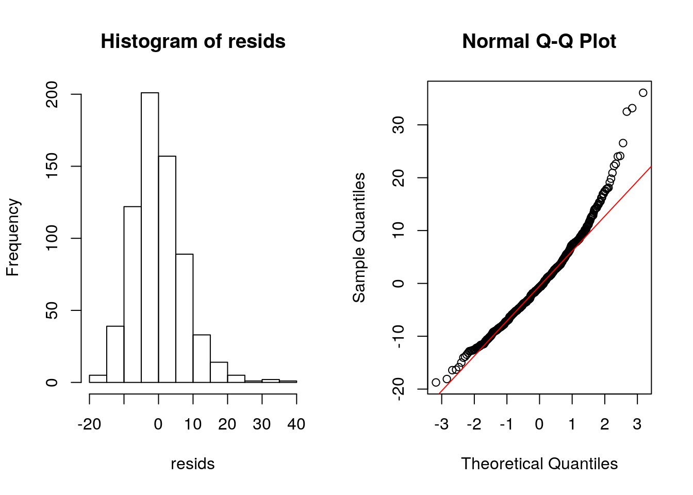
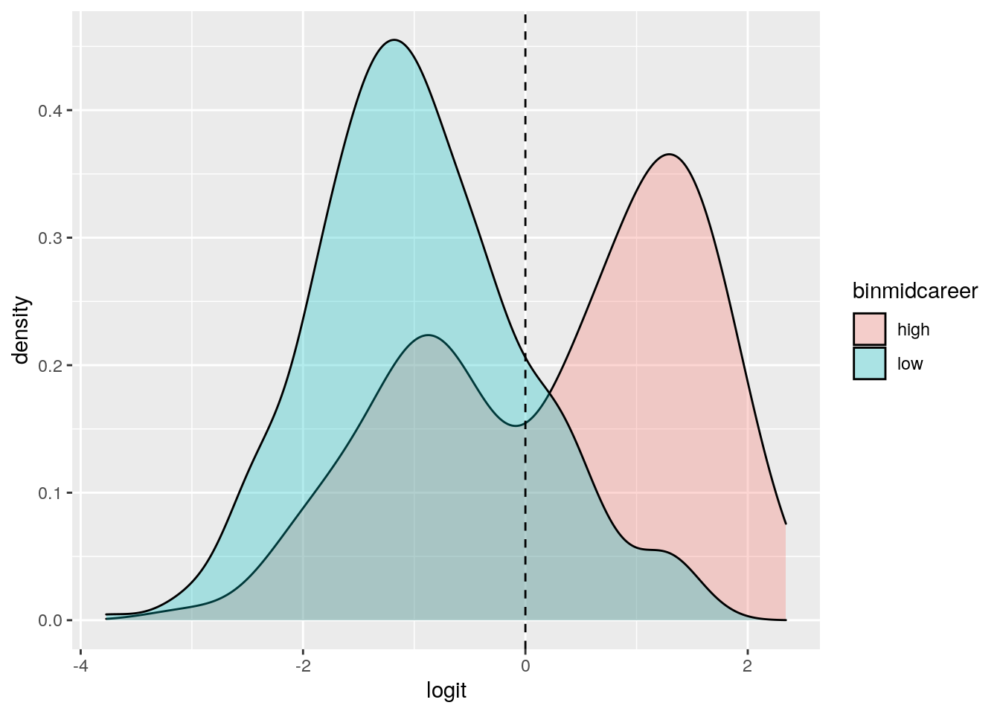
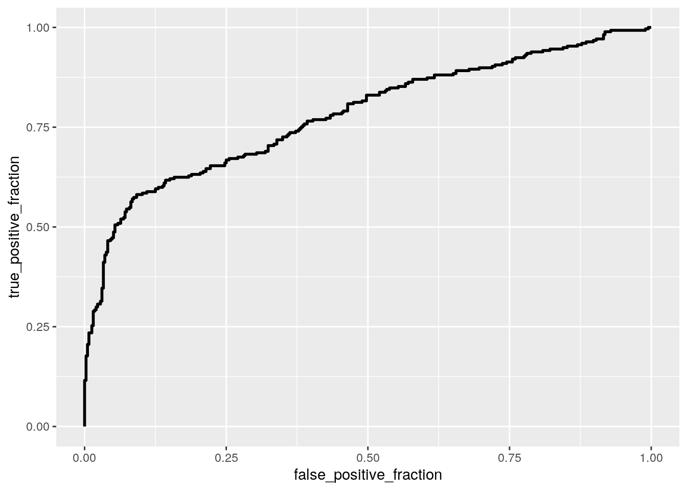

My dataset comes from a tuitiontracker.org, and provides various information related to colleges, with a focus on tuition data. It has data on average pay in mid and early career for each college, as well as in and out-of-state tuitions. Also, there is a lot of identifier information for each college such as what type of education it provides and whether it is public or private. Lastly, it has a very interesting variable known as makes world better percent, which is the percentage of alumin who believe they make the world a better place. After filtering out na's and merging various data, there are 669 colleges analyzed in this project. I chose this dataset for a very personal reason. When applying to colleges, I was not aware of choosing a college to attend might affect my future pay and contentedness with a future job. I also was scared off from private schools with a hefty price tag, as I was unsure of how much that would realistically help me in life. These are situations in which analyzing data as done in this project can help provide statistics and clear-cut proof as to whether it is worth it to pay more in tuition for an education.
library(dplyr)##
## Attaching package: 'dplyr'## The following objects are masked from 'package:stats':
##
## filter, lag## The following objects are masked from 'package:base':
##
## intersect, setdiff, setequal, unionlibrary(tidyverse)## ── Attaching packages ───────────## ✓ ggplot2 3.3.2 ✓ purrr 0.3.4
## ✓ tibble 3.0.3 ✓ stringr 1.4.0
## ✓ tidyr 1.1.1 ✓ forcats 0.5.0
## ✓ readr 1.3.1## ── Conflicts ────────────────────
## x dplyr::filter() masks stats::filter()
## x dplyr::lag() masks stats::lag()library(ggplot2)In this chunk, the data are read in, merged,and prepared for future analysis. An inner-join was used to ensure each school has all observations.
tuition_cost <- readr::read_csv('https://raw.githubusercontent.com/rfordatascience/tidytuesday/master/data/2020/2020-03-10/tuition_cost.csv')## Parsed with column specification:
## cols(
## name = col_character(),
## state = col_character(),
## state_code = col_character(),
## type = col_character(),
## degree_length = col_character(),
## room_and_board = col_double(),
## in_state_tuition = col_double(),
## in_state_total = col_double(),
## out_of_state_tuition = col_double(),
## out_of_state_total = col_double()
## )salary_potential <- readr::read_csv('https://raw.githubusercontent.com/rfordatascience/tidytuesday/master/data/2020/2020-03-10/salary_potential.csv')## Parsed with column specification:
## cols(
## rank = col_double(),
## name = col_character(),
## state_name = col_character(),
## early_career_pay = col_double(),
## mid_career_pay = col_double(),
## make_world_better_percent = col_double(),
## stem_percent = col_double()
## )tut<- tuition_cost%>%
inner_join(salary_potential, by="name")
tut1<-tut%>%na.omit%>%filter(type!="For Profit")In this section, a MANOVA test will be run to see if several different variables can be used to predict whether a school is public or private. First,the assumption of multivariate normality was tested to check and see if a MANOVA is appropriate given these variables. After testing the multivariate normality, the assumption is broken as both private and public schools we reject the nullof assumption met with very low p-values. Therefore, we will proceed with this MANOVA with caution, as assumptions are not likely met.
library(rstatix)##
## Attaching package: 'rstatix'## The following object is masked from 'package:stats':
##
## filtergroup <- tut1$type
DVs <- tut1 %>% select(early_career_pay,mid_career_pay,make_world_better_percent,stem_percent)
#Test multivariate normality for each group (null: assumption met)
sapply(split(DVs,group), mshapiro_test)## Private Public
## statistic 0.9207865 0.7276031
## p.value 5.383472e-14 4.371263e-20When running the MANOVA, a very small p-value of 1.803e-08 was given. Therefore, we can conclude there is a mean difference of at least some of the numeric variables across the type of school (public or private).
man1<-manova(cbind(early_career_pay,mid_career_pay,make_world_better_percent,stem_percent)~type, data=tut1)
summary(man1)## Df Pillai approx F num Df den Df Pr(>F)
## type 1 0.060976 10.779 4 664 1.803e-08 ***
## Residuals 667
## ---
## Signif. codes: 0 '***' 0.001 '**' 0.01 '*' 0.05 '.' 0.1 ' ' 15 total tests were run, so the probability of error is high if no correction is made. In fact, the probability of a type 1 error if no correction is made is 22.6%. Since 5 tests were run, we must use bonferonnis correction on the normal p-value of 0.05 to test significance of the results. Since 0.05/5=0.01, this is our new alpha using bonferonnis correction. These univariate ANOVAs were run to determine which variables show mean differences across the type of school. The variables that reported significant mean-differences were early-career pay and mid-career pay. Since there are only two groups within type of school, public and private, post-hoc ttests would have no real function. Therefore, instead I checked to see whether public or private schools had the higher early and mid career pays. For both early and mid-career pay, private school alumni had the higher average pay.
1-(.95^5)## [1] 0.2262191summary.aov(man1)## Response early_career_pay :
## Df Sum Sq Mean Sq F value Pr(>F)
## type 1 1.3906e+09 1390621401 21.721 3.809e-06 ***
## Residuals 667 4.2703e+10 64022227
## ---
## Signif. codes: 0 '***' 0.001 '**' 0.01 '*' 0.05 '.' 0.1 ' ' 1
##
## Response mid_career_pay :
## Df Sum Sq Mean Sq F value Pr(>F)
## type 1 6.1561e+09 6156138872 26.033 4.382e-07 ***
## Residuals 667 1.5773e+11 236476471
## ---
## Signif. codes: 0 '***' 0.001 '**' 0.01 '*' 0.05 '.' 0.1 ' ' 1
##
## Response make_world_better_percent :
## Df Sum Sq Mean Sq F value Pr(>F)
## type 1 84 84.330 1.253 0.2634
## Residuals 667 44891 67.302
##
## Response stem_percent :
## Df Sum Sq Mean Sq F value Pr(>F)
## type 1 121 120.95 0.5086 0.476
## Residuals 667 158630 237.83tut1%>%group_by(type)%>%summarize(mean(early_career_pay))## `summarise()` ungrouping output (override with `.groups` argument)## # A tibble: 2 x 2
## type `mean(early_career_pay)`
## <chr> <dbl>
## 1 Private 52258.
## 2 Public 49285.tut1%>%group_by(type)%>%summarize(mean(mid_career_pay))## `summarise()` ungrouping output (override with `.groups` argument)## # A tibble: 2 x 2
## type `mean(mid_career_pay)`
## <chr> <dbl>
## 1 Private 94957.
## 2 Public 88702.Here, I decided to go with a randomized mean differences test to see if there was a mean difference in in-state total costs between colleges that have an early career pay above and below the mean. The null hypothesis is that there is no difference in stem percent for colleges with high and low early career pay, and the alternative is that there is a difference in stem percentages for colleges with high and low stem percentages.
tut1$high_early_pay<- ifelse(tut1$early_career_pay>mean(tut1$early_career_pay),"yes","no")
rand_dist<-vector()
set.seed(12)
for(i in 1:5000){
new<-data.frame(stem=sample(tut1$stem_percent),high_early_pay=tut1$high_early_pay)
rand_dist[i]<-mean(new[new$high_early_pay=="yes",]$stem)-
mean(new[new$high_early_pay=="no",]$stem)
}
quantile(rand_dist,c(.025, .975))## 2.5% 97.5%
## -2.369837 2.364378{hist(rand_dist,main="",ylab=""); abline(v = c(-2.370,2.364),col="red")}
#actual mean difference
mean(tut1[tut1$high_early_pay=="yes",]$stem_percent)-
mean(tut1[new$high_early_pay=="no",]$stem_percent)## [1] 14.51348After looking at the results of this randomization test, we can determine that there is in fact a mean difference in the stem percentages for colleges with a high early career pay in comparison to colleges with low early career pay. It would be astronomically unlikely that the observed mean difference between these two groups would be the 14.513 if there was no true mean difference between groups, and this falls well outside the 95% confidence interval from -2.370 to 2.364 provided by the randomization test. The test statistic cutoffs are shown as red lines on the histogram.
In this part of the project, a linear regression model was run to attempt to predict the percent of alumni who believe they make the world better from the in state total cost of the college and the mid career pay of alumni from the college.
Here, the numeric variables were all mean-centered, and the linear model was run with interaction, and a summary was printed out.The predicted percentage of alumni who feel they make the world better when the college has an average in-state total cost and average mid-career pay is 53.07%. With an average mid-career pay, for every 1 increase in in-state total cost the makes world better percentage decreases by 0.00012. With an average in-state total cost, for every 1 increase in mid-career pay will decrease the makes world better percentage by .00013. The interaction between mid-career pay and in-state total cost and shows that the effect of mid-career pay of alumni has an effect that decreases by 1.54e-9 for each unit increase in in-state total cost.
tut1$in_state_total_c <- tut1$in_state_total - mean(tut$in_state_total)
tut1$mid_career_pay_c <- tut1$mid_career_pay - mean(tut1$mid_career_pay)
tut1$make_world_better_percent_c <- tut1$make_world_better_percent - mean(tut1$make_world_better_percent)
fit<-lm(make_world_better_percent~mid_career_pay_c*in_state_total_c,data=tut1)
summary(fit)##
## Call:
## lm(formula = make_world_better_percent ~ mid_career_pay_c * in_state_total_c,
## data = tut1)
##
## Residuals:
## Min 1Q Median 3Q Max
## -18.738 -4.962 -0.712 3.958 36.074
##
## Coefficients:
## Estimate Std. Error t value Pr(>|t|)
## (Intercept) 5.307e+01 3.287e-01 161.455 < 2e-16 ***
## mid_career_pay_c -1.305e-04 2.392e-05 -5.458 6.81e-08 ***
## in_state_total_c -1.154e-04 1.937e-05 -5.960 4.09e-09 ***
## mid_career_pay_c:in_state_total_c 1.540e-09 9.944e-10 1.549 0.122
## ---
## Signif. codes: 0 '***' 0.001 '**' 0.01 '*' 0.05 '.' 0.1 ' ' 1
##
## Residual standard error: 7.471 on 665 degrees of freedom
## Multiple R-squared: 0.1748, Adjusted R-squared: 0.1711
## F-statistic: 46.96 on 3 and 665 DF, p-value: < 2.2e-16library(interactions)
interact_plot(fit, pred = in_state_total_c, modx = mid_career_pay_c, plot.points = TRUE)
Here, it is shown that both the linearity and normality assumptions of a linear model are in fact breached.The histogram of residuals is not normal with a skew left, the qqplot veers off the line, and the scatterplots for linearity don't have a clear linear pattern. However, the bptest of homoskedasticity shows that homoskedasticity is in fact met as the null is not rejected with a p-value of 0.2285.
library(sandwich); library(lmtest) ## Loading required package: zoo##
## Attaching package: 'zoo'## The following objects are masked from 'package:base':
##
## as.Date, as.Date.numeric#Homoskedasticity Test
bptest(fit) ##
## studentized Breusch-Pagan test
##
## data: fit
## BP = 4.3245, df = 3, p-value = 0.2285#Linearity Scatterplots
tut1%>%ggplot(aes(in_state_total_c,make_world_better_percent))+geom_point()
tut1%>%ggplot(aes(mid_career_pay_c,make_world_better_percent))+geom_point()
#Normality plots
resids<-fit$residuals
fitvals<-fit$fitted.values
data.frame(resids,fitvals)%>%ggplot(aes(fitvals,resids))+geom_point()+geom_hline(yintercept=0)
par(mfrow=c(1,2)); hist(resids); qqnorm(resids); qqline(resids, col='red')
The robust standard errors were used to summarize the linear model here. The robust standard errors show significant effects of mid-career pay and in-state total cost on the percentage of alumni who feel they make the world a better place. There is no significant interaction between mid-career pay and in-state total cost on the percentage of alumni who feel they make the world a better place. In terms of significance, there was no change from the test when run normally, and the coefficients were very similar too.
coeftest(fit, vcov = vcovHC(fit))##
## t test of coefficients:
##
## Estimate Std. Error t value Pr(>|t|)
## (Intercept) 5.3073e+01 3.4758e-01 152.6902 < 2.2e-16
## mid_career_pay_c -1.3055e-04 3.2091e-05 -4.0680 5.311e-05
## in_state_total_c -1.1545e-04 1.9477e-05 -5.9272 4.948e-09
## mid_career_pay_c:in_state_total_c 1.5398e-09 1.0347e-09 1.4881 0.1372
##
## (Intercept) ***
## mid_career_pay_c ***
## in_state_total_c ***
## mid_career_pay_c:in_state_total_c
## ---
## Signif. codes: 0 '***' 0.001 '**' 0.01 '*' 0.05 '.' 0.1 ' ' 1The regular R^2 shows that 17.48% of the variation in alumni who feel they make the world a better place is explained by the model, while the adjusted R^2 shows that only 17.11% of variation is explained by the model.
summary(fit)##
## Call:
## lm(formula = make_world_better_percent ~ mid_career_pay_c * in_state_total_c,
## data = tut1)
##
## Residuals:
## Min 1Q Median 3Q Max
## -18.738 -4.962 -0.712 3.958 36.074
##
## Coefficients:
## Estimate Std. Error t value Pr(>|t|)
## (Intercept) 5.307e+01 3.287e-01 161.455 < 2e-16 ***
## mid_career_pay_c -1.305e-04 2.392e-05 -5.458 6.81e-08 ***
## in_state_total_c -1.154e-04 1.937e-05 -5.960 4.09e-09 ***
## mid_career_pay_c:in_state_total_c 1.540e-09 9.944e-10 1.549 0.122
## ---
## Signif. codes: 0 '***' 0.001 '**' 0.01 '*' 0.05 '.' 0.1 ' ' 1
##
## Residual standard error: 7.471 on 665 degrees of freedom
## Multiple R-squared: 0.1748, Adjusted R-squared: 0.1711
## F-statistic: 46.96 on 3 and 665 DF, p-value: < 2.2e-16The model was re-run, and then bootstrapped by randomly sampling the residuals. Then, the SE's from the original, robust SE's, and bootstrap were all compared, and shown to be very similar to each other, with the robust SE's hacing the highest coefficient. Therefore, the lowest p-values are likely to be in the original and bootstrapped models as they have lower and very similar standard errors compared to the model computed using robust SEs.
fit<-lm(make_world_better_percent~in_state_total_c*mid_career_pay_c,data=tut1)
resids<-fit$residuals
fitted<-fit$fitted.values
resid_resamp<-replicate(5000,{
new_resids<-sample(resids,replace=TRUE)
tut1$new_y<-fitted+new_resids
fit<-lm(new_y~in_state_total_c*mid_career_pay_c,data=tut1)
coef(fit)
})
##Estimated SEs from original
coeftest(fit)[,2]%>%as.data.frame()## .
## (Intercept) 3.287148e-01
## in_state_total_c 1.937060e-05
## mid_career_pay_c 2.391978e-05
## in_state_total_c:mid_career_pay_c 9.943665e-10##Estimated SEs from Robust Standard Errors
coeftest(fit, vcov=vcovHC(fit))[,2]%>%as.data.frame()## .
## (Intercept) 3.475829e-01
## in_state_total_c 1.947739e-05
## mid_career_pay_c 3.209141e-05
## in_state_total_c:mid_career_pay_c 1.034729e-09## Estimated SEs from bootstrapped residuals
resid_resamp%>%t%>%as.data.frame%>%summarize_all(sd)## (Intercept) in_state_total_c mid_career_pay_c
## 1 0.3308659 1.937307e-05 2.365051e-05
## in_state_total_c:mid_career_pay_c
## 1 1.001487e-09First, a variable named binmidcareer was formed to form a binary variable in which 1 correlates to higher than the mean mid-career pay, and 0 correlates to lower than the mean mid-career pay. Then, a logistic regression was run to see if in-state total costs and the percentage of alumni who feel they make the world a better place could predict this new variable binmidcareer. Controlling for the make world better percent, for every one increase in in-state total cost the odds of being in the higher mid-career pay group increase by a factor of 1.0000498. Controlling for the in-state total cost variable, for every one increase in makes world better percent will decrease the odds of being in the higher binmidcareer group by a factor of 0.9332300. The odds of being in the higher mid-career pay group at the average in-state total cost and makes world better percent are 0.6040845.
logit<-function(p)log(odds(p))
tut1$binmidcareer <- ifelse(tut1$mid_career_pay>mean(tut1$mid_career_pay),1,0)
tut1<-tut1%>%select(-name,-state,-state_code,-state_name)
tut1## # A tibble: 669 x 17
## type degree_length room_and_board in_state_tuition in_state_total
## <chr> <chr> <dbl> <dbl> <dbl>
## 1 Publ… 4 Year 8782 9440 18222
## 2 Priv… 4 Year 4200 15150 19350
## 3 Priv… 4 Year 12330 41160 53490
## 4 Publ… 4 Year 5422 11068 16490
## 5 Priv… 4 Year 7300 20830 28130
## 6 Priv… 4 Year 10920 35105 46025
## 7 Priv… 4 Year 13200 32060 45260
## 8 Priv… 4 Year 12380 45775 58155
## 9 Publ… 4 Year 9608 7144 16752
## 10 Priv… 4 Year 10998 40258 51256
## # … with 659 more rows, and 12 more variables: out_of_state_tuition <dbl>,
## # out_of_state_total <dbl>, rank <dbl>, early_career_pay <dbl>,
## # mid_career_pay <dbl>, make_world_better_percent <dbl>, stem_percent <dbl>,
## # high_early_pay <chr>, in_state_total_c <dbl>, mid_career_pay_c <dbl>,
## # make_world_better_percent_c <dbl>, binmidcareer <dbl>fit3<- glm(binmidcareer~in_state_total_c+make_world_better_percent_c,data=tut1, family=binomial(link="logit"))
summary(fit3)##
## Call:
## glm(formula = binmidcareer ~ in_state_total_c + make_world_better_percent_c,
## family = binomial(link = "logit"), data = tut1)
##
## Deviance Residuals:
## Min 1Q Median 3Q Max
## -1.9177 -0.8334 -0.5331 0.7841 2.5082
##
## Coefficients:
## Estimate Std. Error z value Pr(>|z|)
## (Intercept) -5.040e-01 9.257e-02 -5.445 5.18e-08 ***
## in_state_total_c 4.979e-05 5.499e-06 9.054 < 2e-16 ***
## make_world_better_percent_c -6.910e-02 1.327e-02 -5.208 1.91e-07 ***
## ---
## Signif. codes: 0 '***' 0.001 '**' 0.01 '*' 0.05 '.' 0.1 ' ' 1
##
## (Dispersion parameter for binomial family taken to be 1)
##
## Null deviance: 907.56 on 668 degrees of freedom
## Residual deviance: 722.45 on 666 degrees of freedom
## AIC: 728.45
##
## Number of Fisher Scoring iterations: 4exp(coef(fit3))## (Intercept) in_state_total_c
## 0.6040845 1.0000498
## make_world_better_percent_c
## 0.9332300class_diag<-function(probs,truth){
tab<-table(factor(probs>.5,levels=c("FALSE","TRUE")),truth)
acc=sum(diag(tab))/sum(tab)
sens=tab[2,2]/colSums(tab)[2]
spec=tab[1,1]/colSums(tab)[1]
ppv=tab[2,2]/rowSums(tab)[2]
f1=2*(sens*ppv)/(sens+ppv)
if(is.numeric(truth)==FALSE & is.logical(truth)==FALSE){
truth<-as.numeric(truth)-1}
ord<-order(probs, decreasing=TRUE)
probs <- probs[ord]; truth <- truth[ord]
TPR=cumsum(truth)/max(1,sum(truth))
FPR=cumsum(!truth)/max(1,sum(!truth))
dup<-c(probs[-1]>=probs[-length(probs)], FALSE)
TPR<-c(0,TPR[!dup],1); FPR<-c(0,FPR[!dup],1)
n <- length(TPR)
auc<- sum( ((TPR[-1]+TPR[-n])/2) * (FPR[-1]-FPR[-n]) )
data.frame(acc,sens,spec,ppv,f1,auc)
}The accuracy of the model is 0.7488789, the sensitivity(or true positive rate) is 0.6245487, the specificity(or true negative rate) is 0.8367347, the precision(or percent of positives correctly predicted) is 0.7200578. The AUC of 0.7807228 shows the model is fair at predicting the binmidcareer variable.
prob <- predict(fit3, type = "response")
table(predict = as.numeric(prob > 0.5), truth = tut1$binmidcareer) %>%
addmargins## truth
## predict 0 1 Sum
## 0 328 104 432
## 1 64 173 237
## Sum 392 277 669class_diag(prob, tut1$binmidcareer)## acc sens spec ppv f1 auc
## 1 0.7488789 0.6245487 0.8367347 0.7299578 0.6731518 0.7807228A density plot of the log-odds was then made to highlight the accuracy (and inaccuracy of the plot). Shown here, the model is fairly accurate, but is far from perfect.
tut1$logit<-predict(fit3)
tut1$binmidcareer<-ifelse(tut1$mid_career_pay>mean(tut1$mid_career_pay),"high","low")
tut1 %>% mutate(binmidcareer=factor(binmidcareer,levels=c("high","low"))) %>%
ggplot(aes(logit, fill=binmidcareer))+geom_density(alpha=.3)+
geom_vline(xintercept=0,lty=2) #ROC Plot Here, the AUC of the ROCplot is 0.781, which is a fairly good AUC. It is a decent model as it does not fall in the 0.5-0.7 range.The accuracy of the model is 0.7488789, the sensitivity(or true positive rate) is 0.6245487, the specificity(or true negative rate) is 0.8367347, the precision(or percent of positives correctly predicted) is 0.7200578. The AUC of 0.7807228 shows the model is fair at predicting the binmidcareer variable.
library(plotROC)
tut1$binmidcareer<-ifelse(tut1$mid_career_pay>mean(tut1$mid_career_pay),1,0)
tut1$prob <- predict(fit3, type = "response")
tut1$predicted <- ifelse(tut1$binmidcareer > 0.5, "High",
"Low")
ROCplot <- ggplot(tut1) + geom_roc(aes(d = binmidcareer,
m = prob), n.cuts = 0)
ROCplot
calc_auc(ROCplot)## PANEL group AUC
## 1 1 -1 0.7807228Here, all variables that could possibly be used to predict the variable binmidcareer, which either shows colleges in the top or bottom half of mid-career pay. The fitted model showed an accuracy of 0.9730942, the sensitivity (or true positive rate) is 0.9602888, the specificity (or true negative rate) is 0.9821429, the precision (or percent of positives correctly predicted) is 0.974359, and the AUC is 0.996307. All these measures seem to show that the model is a very accurate predictor of binmidcareer.
tut1## # A tibble: 669 x 20
## type degree_length room_and_board in_state_tuition in_state_total
## <chr> <chr> <dbl> <dbl> <dbl>
## 1 Publ… 4 Year 8782 9440 18222
## 2 Priv… 4 Year 4200 15150 19350
## 3 Priv… 4 Year 12330 41160 53490
## 4 Publ… 4 Year 5422 11068 16490
## 5 Priv… 4 Year 7300 20830 28130
## 6 Priv… 4 Year 10920 35105 46025
## 7 Priv… 4 Year 13200 32060 45260
## 8 Priv… 4 Year 12380 45775 58155
## 9 Publ… 4 Year 9608 7144 16752
## 10 Priv… 4 Year 10998 40258 51256
## # … with 659 more rows, and 15 more variables: out_of_state_tuition <dbl>,
## # out_of_state_total <dbl>, rank <dbl>, early_career_pay <dbl>,
## # mid_career_pay <dbl>, make_world_better_percent <dbl>, stem_percent <dbl>,
## # high_early_pay <chr>, in_state_total_c <dbl>, mid_career_pay_c <dbl>,
## # make_world_better_percent_c <dbl>, binmidcareer <dbl>, logit <dbl>,
## # prob <dbl>, predicted <chr>tut2<-tut1%>%select(-mid_career_pay,-mid_career_pay_c,-high_early_pay,-in_state_total_c,-make_world_better_percent_c,-prob,-predicted,-degree_length,-in_state_total,-out_of_state_total)
tut2## # A tibble: 669 x 10
## type room_and_board in_state_tuition out_of_state_tu… rank early_career_pay
## <chr> <dbl> <dbl> <dbl> <dbl> <dbl>
## 1 Publ… 8782 9440 20456 16 44400
## 2 Priv… 4200 15150 15150 14 51600
## 3 Priv… 12330 41160 41160 14 46000
## 4 Publ… 5422 11068 19396 20 39800
## 5 Priv… 7300 20830 20830 3 50300
## 6 Priv… 10920 35105 35105 1 81000
## 7 Priv… 13200 32060 32060 18 49700
## 8 Priv… 12380 45775 45775 7 52100
## 9 Publ… 9608 7144 7144 10 40900
## 10 Priv… 10998 40258 40258 15 48400
## # … with 659 more rows, and 4 more variables: make_world_better_percent <dbl>,
## # stem_percent <dbl>, binmidcareer <dbl>, logit <dbl>fit4<- glm(binmidcareer~.,data=tut2,family="binomial")## Warning: glm.fit: fitted probabilities numerically 0 or 1 occurredsummary(fit4)##
## Call:
## glm(formula = binmidcareer ~ ., family = "binomial", data = tut2)
##
## Deviance Residuals:
## Min 1Q Median 3Q Max
## -3.3414 -0.0179 -0.0001 0.0007 2.0946
##
## Coefficients: (1 not defined because of singularities)
## Estimate Std. Error z value Pr(>|z|)
## (Intercept) -9.628e+01 1.376e+01 -6.995 2.64e-12 ***
## typePublic 3.580e-01 1.661e+00 0.216 0.8293
## room_and_board 6.175e-05 1.367e-04 0.452 0.6515
## in_state_tuition 5.823e-05 9.788e-05 0.595 0.5519
## out_of_state_tuition 4.025e-06 8.714e-05 0.046 0.9632
## rank -8.996e-02 5.061e-02 -1.778 0.0755 .
## early_career_pay 1.897e-03 2.562e-04 7.406 1.30e-13 ***
## make_world_better_percent -5.657e-02 4.488e-02 -1.261 0.2075
## stem_percent 3.668e-02 3.089e-02 1.187 0.2351
## logit NA NA NA NA
## ---
## Signif. codes: 0 '***' 0.001 '**' 0.01 '*' 0.05 '.' 0.1 ' ' 1
##
## (Dispersion parameter for binomial family taken to be 1)
##
## Null deviance: 907.56 on 668 degrees of freedom
## Residual deviance: 105.09 on 660 degrees of freedom
## AIC: 123.09
##
## Number of Fisher Scoring iterations: 10prob <- predict(fit4, type = "response")
class_diag(prob, tut2$binmidcareer)## acc sens spec ppv f1 auc
## 1 0.9730942 0.9602888 0.9821429 0.974359 0.9672727 0.996307When performing a 10-fold CV on all relevant variables, we can see that the model stands quite well in cross validation. The accuracy is 0.9731117, the sensitivity (or true positive rate) was 0.9596127, the specificity (or true negative rate) is 0.9819315, the precision (or percent of positives correctly predicted) is 0.9748988, and the AUC is 0.9959613. Since all these numbers are very close to 1, we can tell the model is extremely accurate in predicting whether or not a college is in the upper or lower half of mid-career pay.
set.seed(1234)
k=10
data<-tut2[sample(nrow(tut2)),]
folds<-cut(seq(1:nrow(tut2)),breaks=k,labels=F)
diags<-NULL
for(i in 1:k){
train<-data[folds!=i,]
test<-data[folds==i,]
truth<-test$binmidcareer
fit<-glm(binmidcareer~.,data=tut2,family="binomial")
probs<-predict(fit,newdata = test,type="response")
diags<-rbind(diags,class_diag(probs,truth))
}## Warning: glm.fit: fitted probabilities numerically 0 or 1 occurred## Warning in predict.lm(object, newdata, se.fit, scale = 1, type = if (type == :
## prediction from a rank-deficient fit may be misleading## Warning: glm.fit: fitted probabilities numerically 0 or 1 occurred## Warning in predict.lm(object, newdata, se.fit, scale = 1, type = if (type == :
## prediction from a rank-deficient fit may be misleading## Warning: glm.fit: fitted probabilities numerically 0 or 1 occurred## Warning in predict.lm(object, newdata, se.fit, scale = 1, type = if (type == :
## prediction from a rank-deficient fit may be misleading## Warning: glm.fit: fitted probabilities numerically 0 or 1 occurred## Warning in predict.lm(object, newdata, se.fit, scale = 1, type = if (type == :
## prediction from a rank-deficient fit may be misleading## Warning: glm.fit: fitted probabilities numerically 0 or 1 occurred## Warning in predict.lm(object, newdata, se.fit, scale = 1, type = if (type == :
## prediction from a rank-deficient fit may be misleading## Warning: glm.fit: fitted probabilities numerically 0 or 1 occurred## Warning in predict.lm(object, newdata, se.fit, scale = 1, type = if (type == :
## prediction from a rank-deficient fit may be misleading## Warning: glm.fit: fitted probabilities numerically 0 or 1 occurred## Warning in predict.lm(object, newdata, se.fit, scale = 1, type = if (type == :
## prediction from a rank-deficient fit may be misleading## Warning: glm.fit: fitted probabilities numerically 0 or 1 occurred## Warning in predict.lm(object, newdata, se.fit, scale = 1, type = if (type == :
## prediction from a rank-deficient fit may be misleading## Warning: glm.fit: fitted probabilities numerically 0 or 1 occurred## Warning in predict.lm(object, newdata, se.fit, scale = 1, type = if (type == :
## prediction from a rank-deficient fit may be misleading## Warning: glm.fit: fitted probabilities numerically 0 or 1 occurred## Warning in predict.lm(object, newdata, se.fit, scale = 1, type = if (type == :
## prediction from a rank-deficient fit may be misleadingsummarize_all(diags,mean) ## acc sens spec ppv f1 auc
## 1 0.9731117 0.9596127 0.9819315 0.9748988 0.9670508 0.9959613When running the LASSO to see whether variables should be dropped, the type of university, the cost of room and board, stem percent, and in state tuition are all able to be dropped. On the other hand, out of state tuition, rank, early career pay, and make world better percent are all significant predictors in this model. However, of these retained, it appears the main effect is coming from early career pay, which makes sense, as those who make a lot of money early in their career will likely make more later in their career too. Also, although it is a small effect, it is interesting how higher percentage of alumni who feel they make the world a better place results in a lower predicted mid-career pay.
library(glmnet)## Loading required package: Matrix##
## Attaching package: 'Matrix'## The following objects are masked from 'package:tidyr':
##
## expand, pack, unpack## Loaded glmnet 4.0-2set.seed(1234)
#code categorical predictors as 0/1
x<-model.matrix(binmidcareer ~ -1+., data=tut2) #the -1 drops the intercept
x<-scale(x)
y<-as.matrix(tut2$binmidcareer)
cv2<-cv.glmnet(x,y, family="binomial")
lasso2<-glmnet(x,y,family="binomial",lambda=cv2$lambda.1se)
coef(lasso2)## 11 x 1 sparse Matrix of class "dgCMatrix"
## s0
## (Intercept) -0.18843301
## typePrivate .
## typePublic .
## room_and_board .
## in_state_tuition .
## out_of_state_tuition 0.12987763
## rank -0.35229361
## early_career_pay 9.29971939
## make_world_better_percent -0.04242442
## stem_percent 0.15806691
## logit 0.50669649When running the LASSO variables under a CV, the AUC is slightly higher than the 10-fold CV for all variables. The AUC for this LASSO CV is 0.996052, showing this model does an excellent job of predicting whether a college is in the upper or lower half of mid-career pay for alumni. However, this model remains limited, as it relies so heavily on the early-career pay averages of a college, but it is still interesting how it does such a great job of this prediction.
set.seed(1234)
k=10
data<-tut2[sample(nrow(tut2)),]
folds<-cut(seq(1:nrow(tut2)),breaks=k,labels=F)
diags<-NULL
for(i in 1:k){
train<-data[folds!=i,]
test<-data[folds==i,]
truth<-test$binmidcareer
fit<-glm(binmidcareer~out_of_state_tuition+rank+early_career_pay+make_world_better_percent,data=tut2,family="binomial")
probs<-predict(fit,newdata = test,type="response")
diags<-rbind(diags,class_diag(probs,truth))
}## Warning: glm.fit: fitted probabilities numerically 0 or 1 occurred
## Warning: glm.fit: fitted probabilities numerically 0 or 1 occurred
## Warning: glm.fit: fitted probabilities numerically 0 or 1 occurred
## Warning: glm.fit: fitted probabilities numerically 0 or 1 occurred
## Warning: glm.fit: fitted probabilities numerically 0 or 1 occurred
## Warning: glm.fit: fitted probabilities numerically 0 or 1 occurred
## Warning: glm.fit: fitted probabilities numerically 0 or 1 occurred
## Warning: glm.fit: fitted probabilities numerically 0 or 1 occurred
## Warning: glm.fit: fitted probabilities numerically 0 or 1 occurred
## Warning: glm.fit: fitted probabilities numerically 0 or 1 occurredsummarize_all(diags,mean) ## acc sens spec ppv f1 auc
## 1 0.9686341 0.9560413 0.9765103 0.9682595 0.9619241 0.996052Overall, this project proved to be a lot of work, but the work was well worth it. From building linear and logisitic models, to learning some of the intricacies of ggplot, I learned a lot of useful tricks for future coding. In retrospect, I wish I had made a different logistic model, predicting something other than mid-career pay, as it ended up relying almost solely on early-career pay as a predictive variable. In spite of this, it was still interesting to analyze the various correlations within college statistics. While I learned a lot analyzing this data, it has also proven to provoke many more questions for future research, and I would love to work with this or another similar dataset in the future.